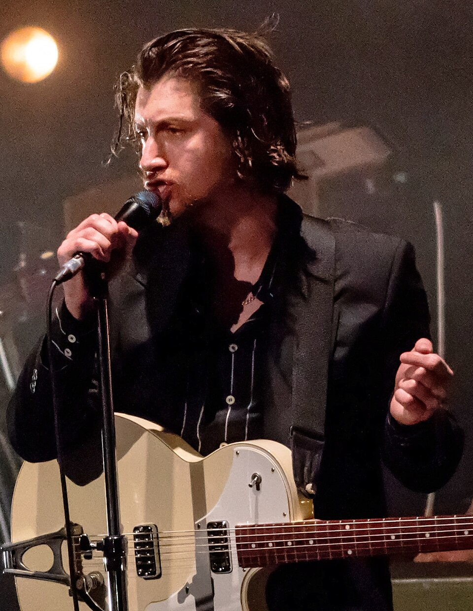
Nº 1
Alex Turner
Voz · guitarra · piano
Alex Turner
voz · guitarra
Voz principal y autor de casi todas las letras de la banda.
DISCOS 01 — 07
SHEFFIELD · DESDE 2002
Cuatro chicos de Sheffield que pasaron de los pubs a los estadios sin perder la elegancia. Esta página es una carta de amor a su música.
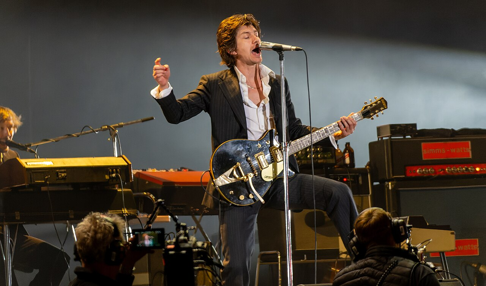
GLASTONBURY 2023 · FOTO: RAPH_PH (CC BY 2.0)
BLANCO Y NEGRO
01 / La banda
Se conocieron en el colegio, aprendieron a tocar juntos y en 2002 ya ensayaban en un garaje del norte de Sheffield. Más de veinte años después, siguen siendo los mismos cuatro.

Nº 1
Voz · guitarra · piano
voz · guitarra
Voz principal y autor de casi todas las letras de la banda.
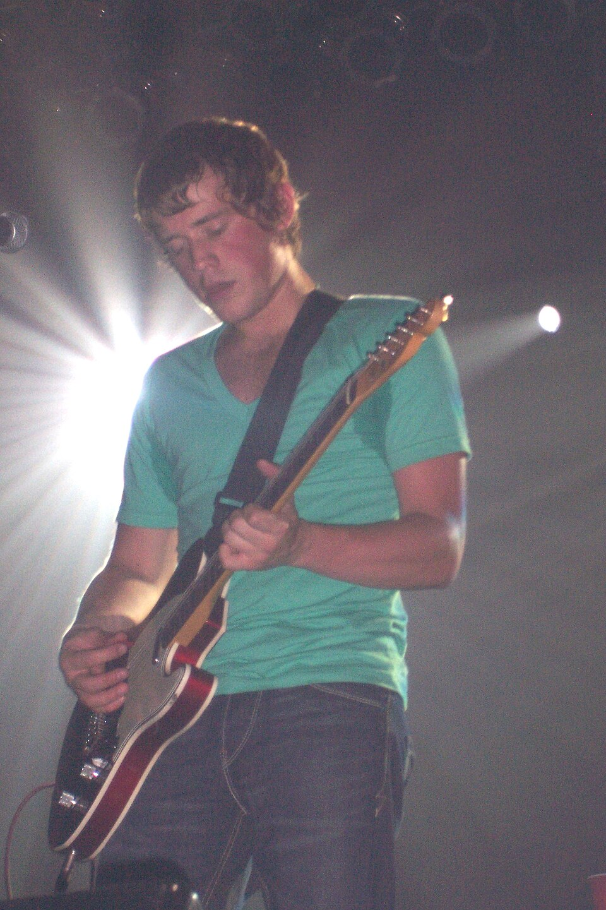
Nº 2
Guitarra
guitarra
Guitarra rítmica y riffs desde el primer ensayo en el garaje.
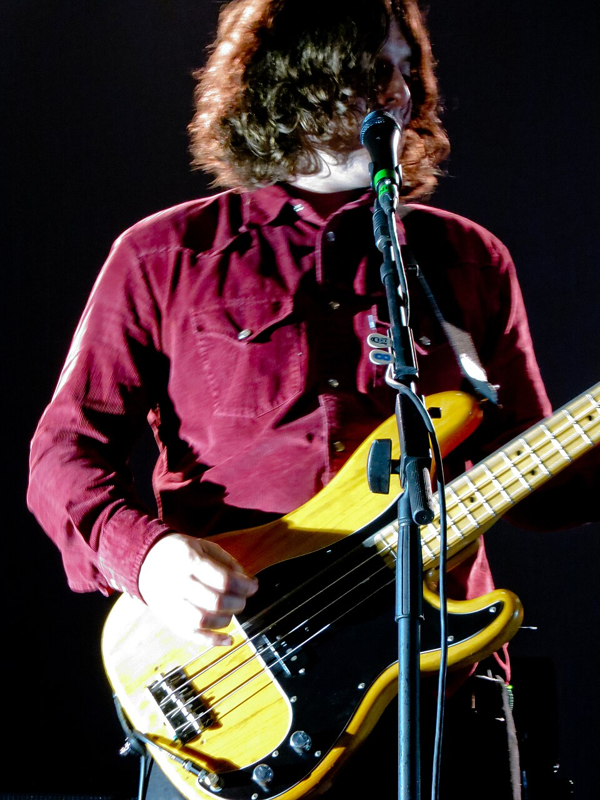
Nº 3
Bajo · coros
bajo · coros
Llegó en 2006 para tocar el bajo y nunca se fue.
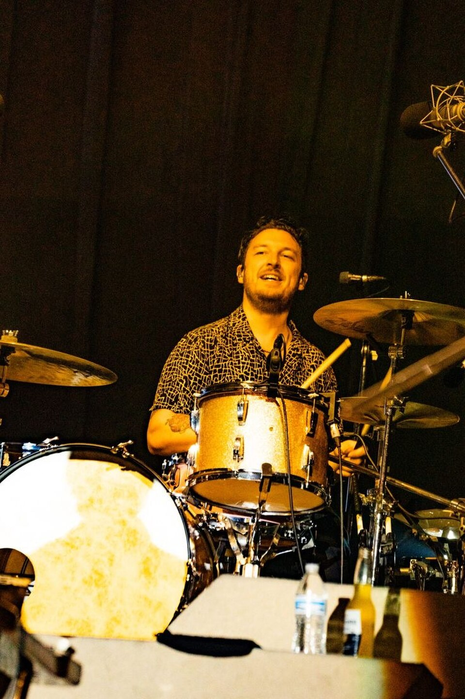
Nº 4
Batería · coros
batería · coros
Batería y los coros agudos que se escuchan en AM.
Desliza hacia el lado para conocer a los cuatro →
2002
02 / Historia
2002
Se forman en High Green
2006
Debut récord y Mercury Prize
2013
AM los lleva a los estadios
7
Discos de estudio
03 / Discografía
Del garaje al desierto, del desierto al lounge en la luna. Así suena cada etapa.
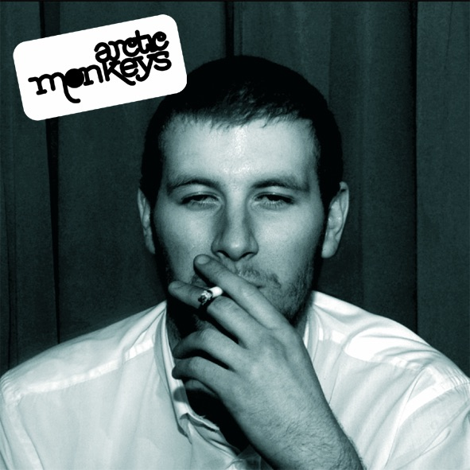
DISCO 01
2006
Un debut que sonaba a sábado por la noche en Sheffield. Ganó el Mercury Prize.
Escuchar ↗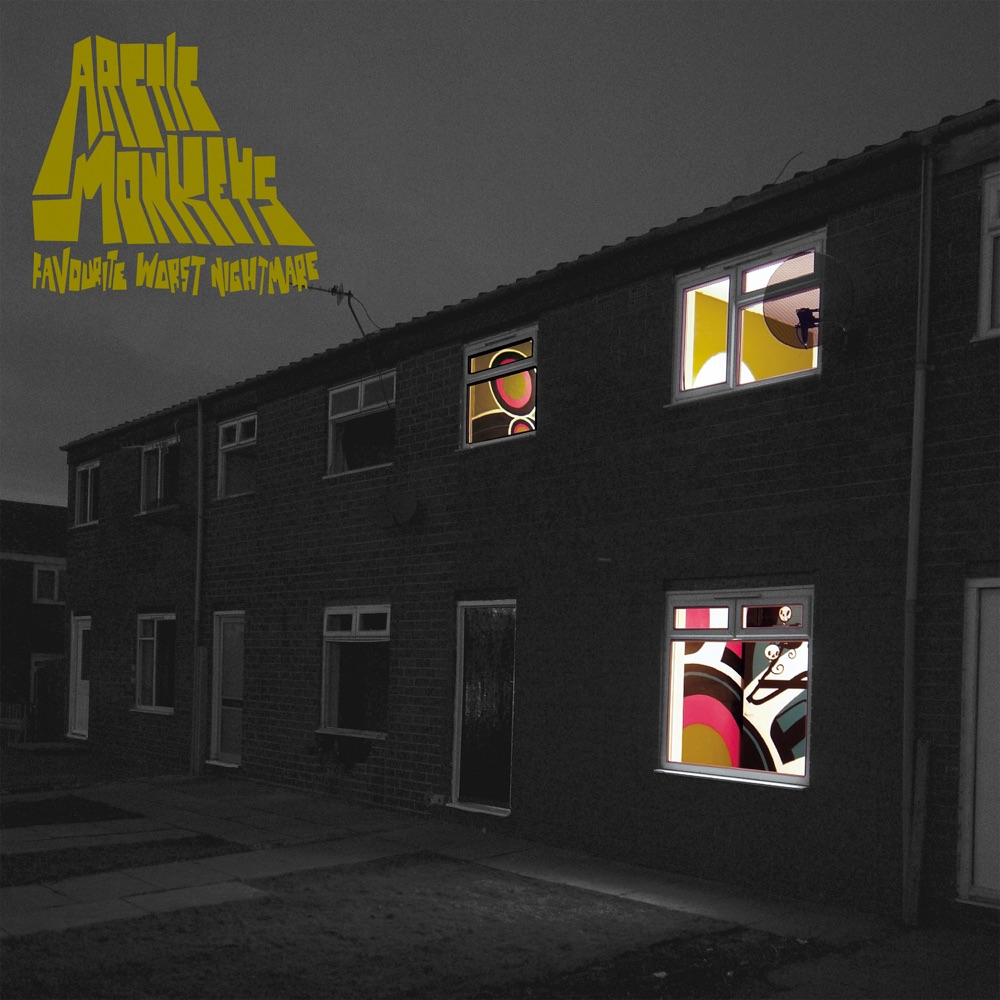
DISCO 02
2007
Más rápido y más afilado. Aquí viven “Brianstorm” y “505”.
Escuchar ↗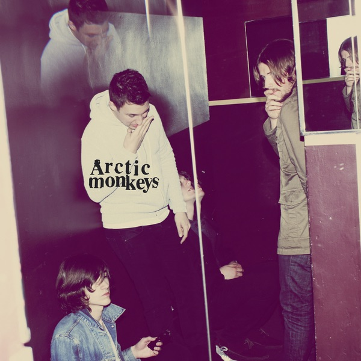
DISCO 03
2009
Grabado en el desierto con Josh Homme. Oscuro y denso.
Escuchar ↗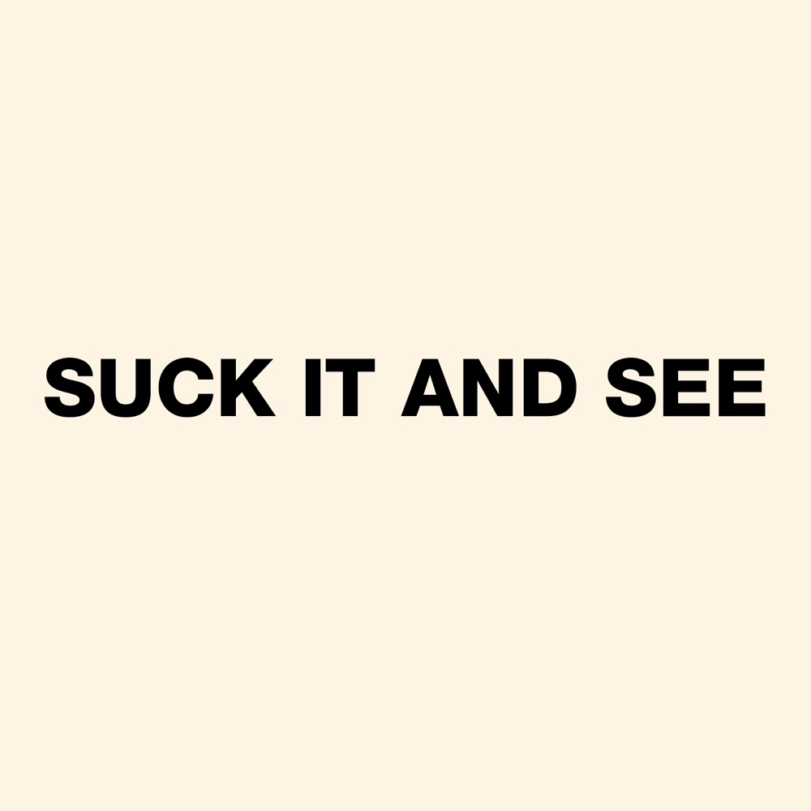
DISCO 04
2011
Su lado más romántico y luminoso.
Escuchar ↗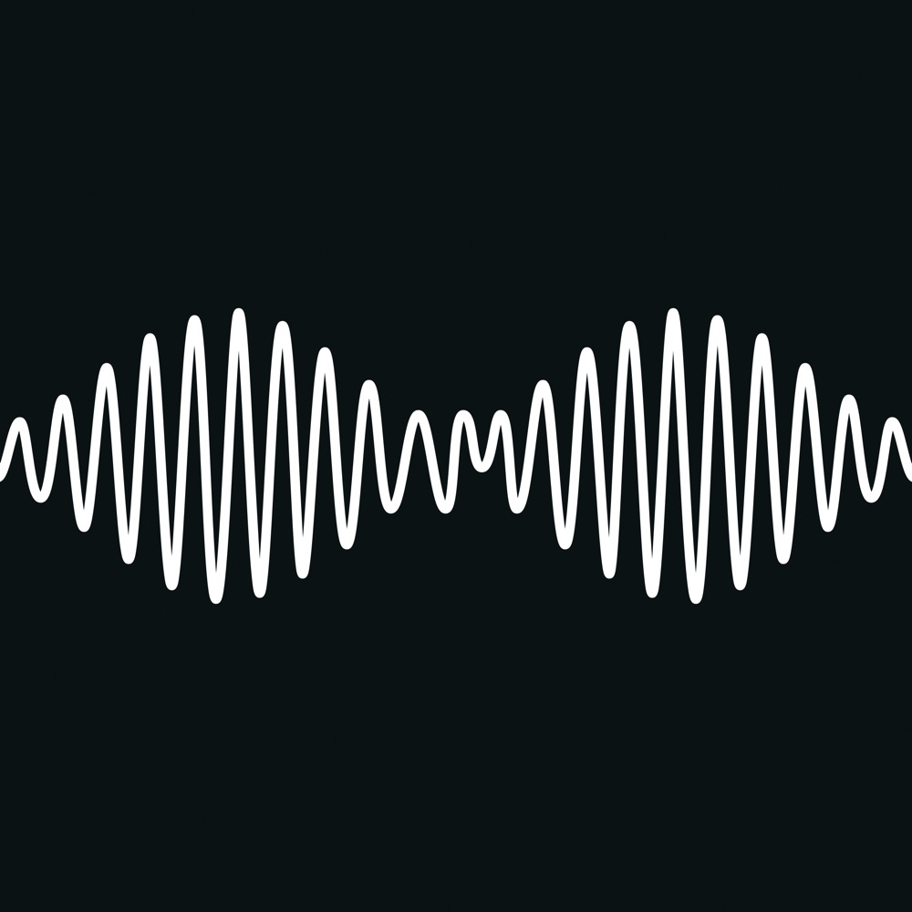
DISCO 05
2013
Riffs pesados con alma de R&B. El disco que los llevó a los estadios.
Escuchar ↗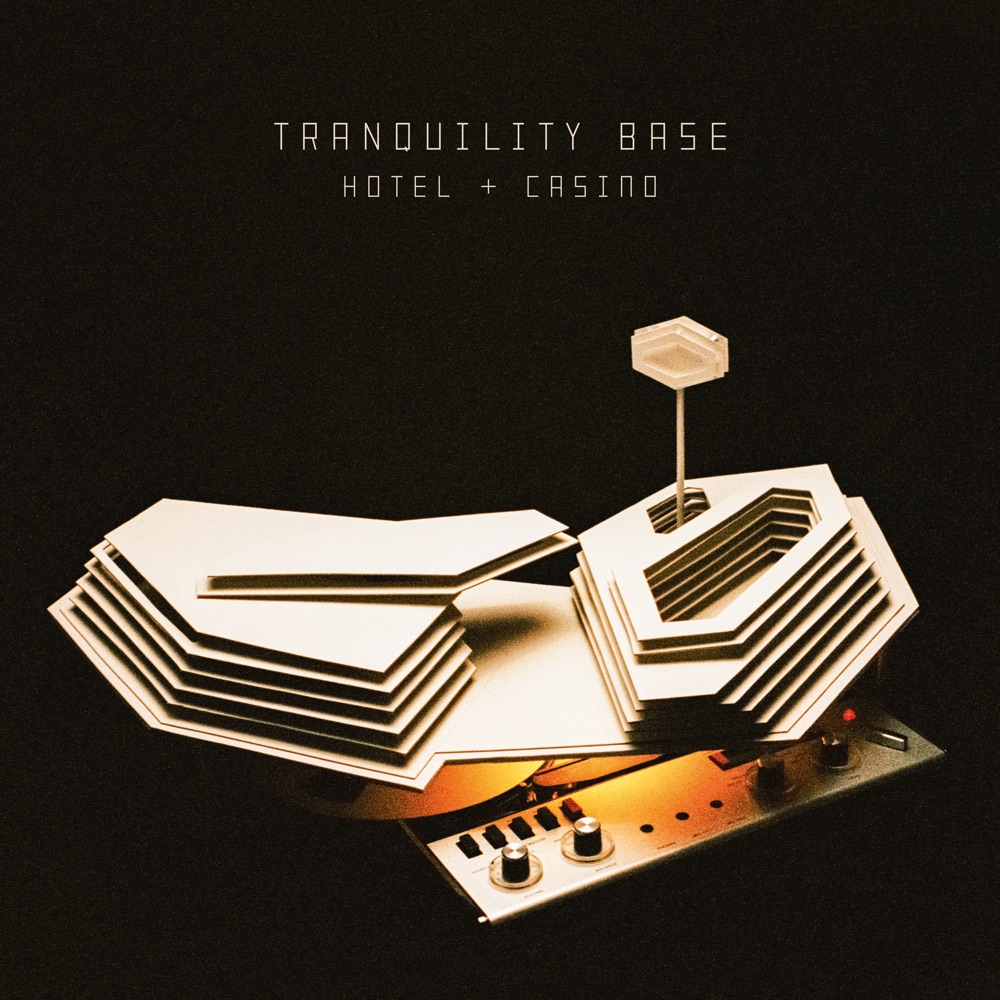
DISCO 06
2018
Un lounge retrofuturista compuesto al piano.
Escuchar ↗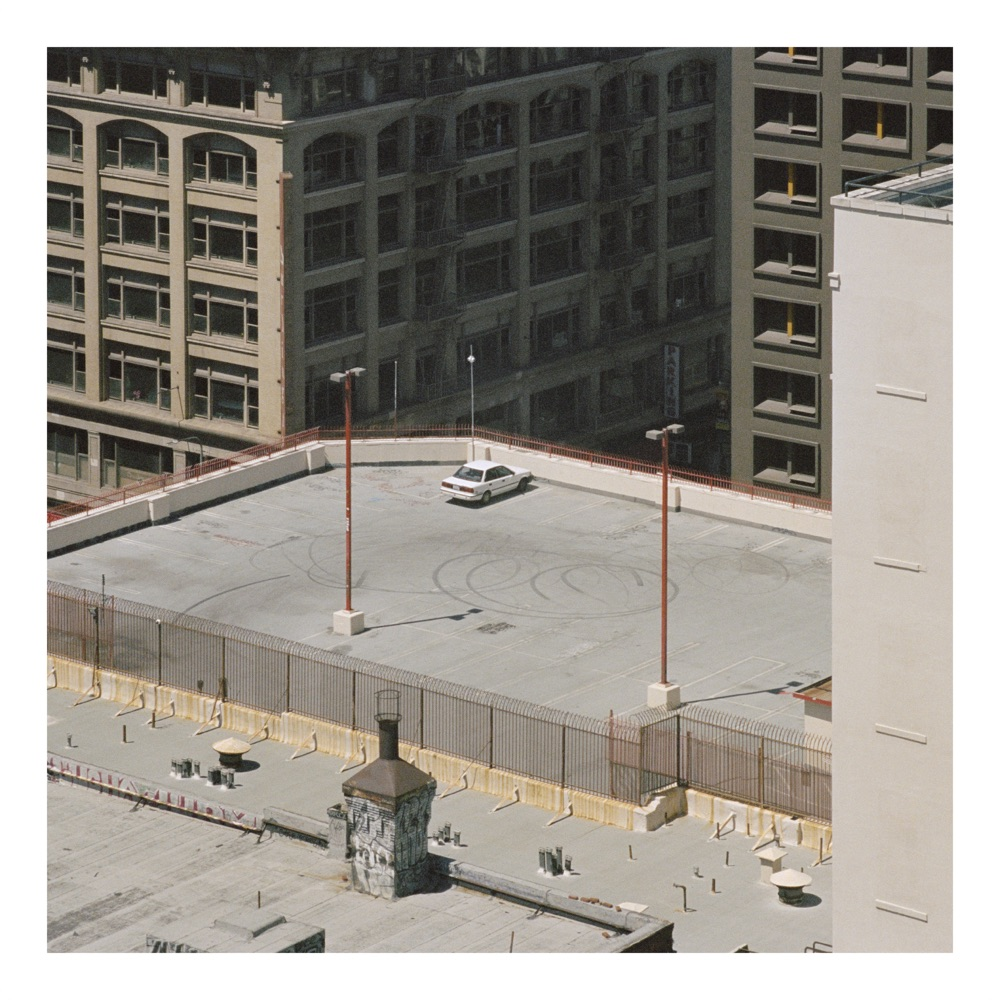
DISCO 07
2022
Cuerdas de cine y elegancia setentera.
Escuchar ↗04 / Lista de correo
Lanzamientos, giras y aniversarios de discos. Un correo cuando haya algo que contar, nunca spam.